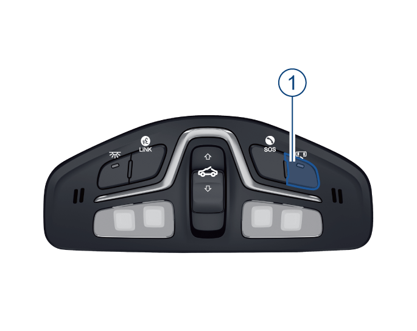

–按开关①，按键灯点亮，打开车顶照明灯自动开启功能；再次按开关①，按键灯熄灭，关闭车顶照明灯自动开启功能。
4.3.2 车内照明灯
车顶照明灯自动开启功能

车内灯延时关闭功能
车顶照明灯均熄灭时，在车顶照明灯自动开启功能开启的条件下：
–整车电源在“OFF”挡位时，打开任一车门，车顶照明灯自动点亮；关闭车门约30s后熄灭。
–整车电源在“OFF”挡位时，遥控解锁车门，车顶照明灯自动点亮，约30s后熄灭。
–整车电源从“ON”挡位切换至“OFF”挡位时，车顶照明灯自动点亮，约30s后熄灭。
车顶照明灯

–车顶照明灯熄灭时，按开关②，按键灯点亮，车顶照明灯均点亮；再次按开关②，车顶照明灯均熄灭。
前排车顶照明灯

–前排车顶照明灯熄灭时，按一下前车顶照明灯③，对应侧的前车顶照明灯点亮；再按一下前车顶照明灯③，对应侧的前排车顶照明灯熄灭。
后排车顶照明灯*

–后排车顶照明灯熄灭时，按端开启后排车顶照明灯，按O端关闭后排车顶照明灯。
–后排车顶照明灯开关处于平整状态，即位置时，可以通过打开车门或按压前顶灯开关点亮。
行李箱照明灯
–打开行李箱盖，行李箱照明灯自动点亮。
–关闭行李箱盖，行李箱照明灯自动熄灭。
梳妆镜照明灯*
–打开梳妆镜盖时，梳妆镜照明灯会自动点亮。
–关闭梳妆镜盖时，梳妆镜照明灯会自动熄灭。
智能氛围灯*
操作界面说明：

氛围灯功能开关
–点击内饰氛围灯软按键，可开启或关闭氛围灯功能。
–在氛围灯功能关闭时其他参数不可调节。
氛围灯亮度调节
–用户可根据个人需求，点击或左右滑动氛围灯亮度进度条调节氛围灯亮度。
跟随驶模式
–开启跟随驾驶模式，氛围灯颜色、音乐律动状态与驾驶模式关联，用户可在4+X界面设置每种驾驶模式下对应的氛围灯颜色和音乐律动状态。
音乐律动模式
–开启音乐律动模式，在播放音乐时，氛围灯随音乐节奏进行律动。
氛围灯颜色
–用户拖动或点击颜色条，可选择氛围灯颜色。
氛围灯设置
进入音响主机界面“我的车→氛围灯→跟随驾驶模式”，点击 软按键开启/关闭。
软按键开启/关闭。

–跟随驾驶模式关闭后，用户在4+X界面调节音乐律动模式或氛围灯颜色时，会弹框提醒用户“是否开启氛围灯跟随驾驶模式”。
–跟随驾驶模式开启后，用户可自定义当前驾驶模式下的氛围灯颜色和音乐律动开关。
–当用户调节空调温度升高时，仪表板氛围灯高亮红色2s后恢复原状态；当用户调节空调温度降低时，仪表板氛围灯高亮蓝色2s后恢复原状态。
— 页面到底了 —